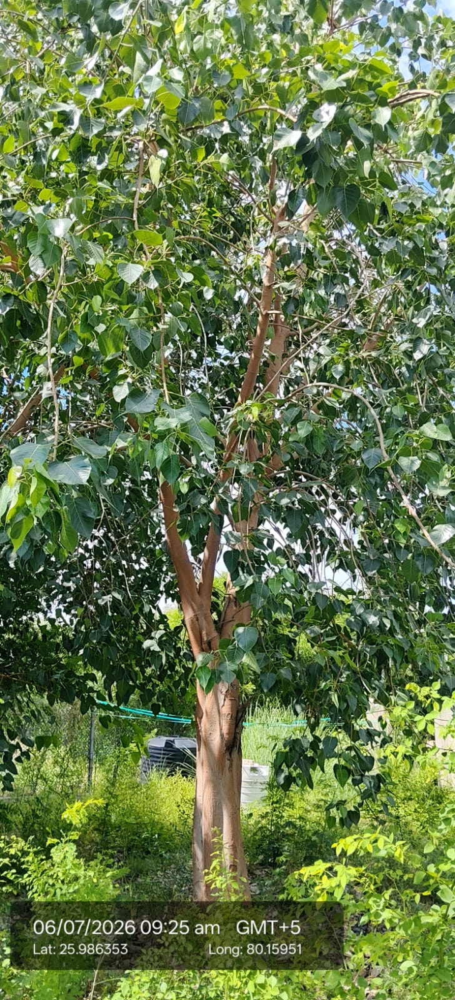

Visual record01 photographs

| Scientific name | Ficus religiosa |
|---|---|
| Family | Moraceae |
| Category | Trees |
Habitat & Growing Conditions
- Native to India, Nepal, and Southeast Asia
- Very common in UP including Kanpur area at your coordinates. Found in temples, roadsides, wastelands, and open areas
- Thrives in tropical to subtropical climate. Highly drought tolerant and pollution resistant
- Grows in almost any soil, even in cracks of buildings. Prefers full sun
- Large deciduous tree, 15-25 m tall when mature. Lives for hundreds of years. Bark is smooth, light grey to reddish-brown like in your photo
Economic Importance
- Religious & Cultural: Most sacred tree in Hinduism, Buddhism, and Jainism. Buddha attained enlightenment under this tree. Leaves and branches used in rituals and worship
- Excellent air purifier. Releases oxygen even at night. Provides food and shelter for birds, bats, and insects
Medicinal Importance
- Bark, leaves, fruits, and latex used in Ayurveda for asthma, skin diseases, wounds, diarrhea, and diabetes. Has anti-inflammatory and antimicrobial properties. Note: Consult a healthcare professional before any medicinal use
Field Notes
- Leaves used as fodder for cattle and goats. Wood is soft, used for fuel, packing cases, and agricultural tools. Latex used in traditional medicine